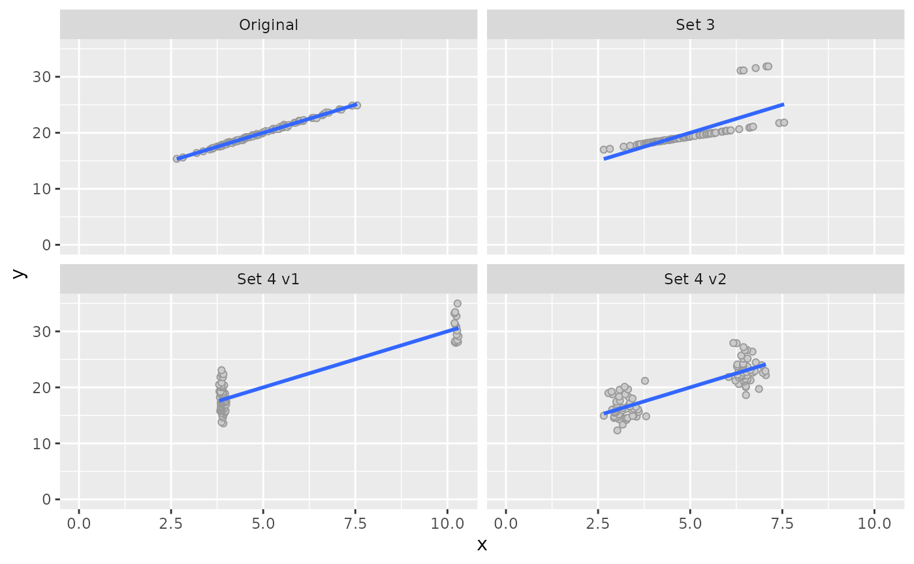

Quasi Anscombe data sets
Source:vignettes/articles/Quasi-Anscombe-data-sets.Rmd
Quasi-Anscombe-data-sets.RmdThe original set (Type 1)
df <- sim_quasianscombe_set_1(beta0 = 10, beta1 = 2, error_sd = 0.1)
plot(df) +
xlim(0, NA) +
ylim(0, NA) 
Set 3: Outliers
df3_1 <- sim_quasianscombe_set_3(df)Set 4: Cluster
df4_1 <- sim_quasianscombe_set_4(df)
df4_2 <- sim_quasianscombe_set_4(df, rescale_to = c(0, .1), prop = 0.5)Compare results
dfs <- list(
"Original" = df,
"Set 3" = df3_1,
"Set 4 v1" = df4_1,
"Set 4 v2" = df4_2
)
dfs <- dfs |>
tibble::enframe(name = "set") |>
tidyr::unnest()
#> Warning: `cols` is now required when using unnest().
#> Please use `cols = c(value)`
dfs
#> # A tibble: 400 × 3
#> set x y
#> <chr> <dbl> <dbl>
#> 1 Original 2.65 15.4
#> 2 Original 2.82 15.6
#> 3 Original 3.19 16.4
#> 4 Original 3.37 16.7
#> 5 Original 3.55 17.0
#> 6 Original 3.61 17.2
#> 7 Original 3.63 17.2
#> 8 Original 3.66 17.3
#> 9 Original 3.75 17.5
#> 10 Original 3.79 17.6
#> # … with 390 more rows
ggplot(dfs, aes(x, y)) +
geom_point(shape = 21, fill = "gray80", color = "gray60") +
geom_smooth(method = "lm", se = FALSE) +
facet_wrap(vars(set)) +
xlim(0, NA) +
ylim(0, NA)
#> `geom_smooth()` using formula 'y ~ x'
df_mods <- dfs |>
dplyr::group_nest(set) |>
dplyr::mutate(
model = map(data, lm, formula = y ~ x),
value = map(model, coefficients),
coef = map(value, names)
)
df_mods |>
dplyr::select(-data, -model) |>
tidyr::unnest(cols = c(value, coef)) |>
tidyr::pivot_wider(names_from = coef, values_from = value)
#> # A tibble: 4 × 3
#> set `(Intercept)` x
#> <chr> <dbl> <dbl>
#> 1 Original 10.0 2.00
#> 2 Set 3 10.0 2.00
#> 3 Set 4 v1 10.0 2.00
#> 4 Set 4 v2 10.0 2.00